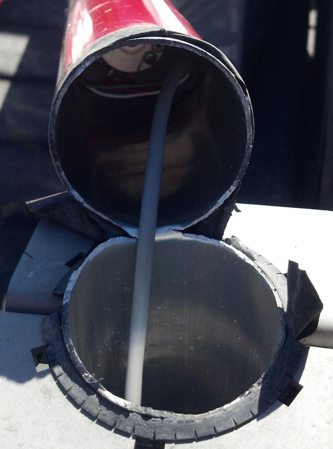
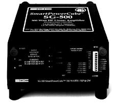
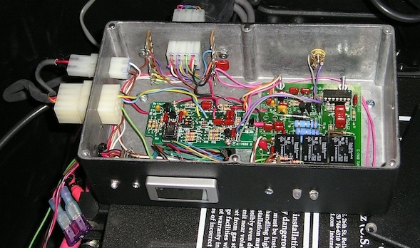

Personal Selections
There are good reasons why I have what I have. For the most part, it's because I have actually used and/or rejected most of the other currently available gear. This includes antennas, transceivers, amplifiers, and antenna controllers. That in itself doesn't mean the other gear wasn't worth the price of admission — although sometimes that was the case. Call it personal preference if you wish. However, some of the available gear I wouldn't own on a bet, whether I have personally tested it or not. A good example are the various short, stubby antennas which have become the current rage. It is important to remember this simple fact: in any mobile installation, the antenna establishes the least common denominator.
Online reviews don't mean much either. For example, the Yaesu ATAS series consistently rates 4+ out of 5 stars, yet it is the lossiest, most trouble-prone, remotely tuned, HF mobile antenna money can buy. They're prone to common mode problems (as mentioned in the owner's manual), and if you live in a very cold or very hot part of the country, you'll find they don't work in either extreme. In spite of all of this, until recently, it was the number one selling remotely tuned HF mobile antenna in the USA.
Here's another truth: the price you pay is not always an indicator of quality, workmanship, longevity, or even implied warranty. It doesn't correlate to efficiency or ease of use either. Whatever selection you make, the best advice I can offer is this — if at all possible, try it before you buy it.
The Antennas

Over the years, I've used about 20 different commercial HF antennas, and a lot of homebrew ones too. One of the remotely tuned ones turned out to be almost a dummy load on the upper bands, although it worked passively on the lower ones.
I've never liked the mounting arrangement (U bracket) that most larger screwdriver antennas use, for several reasons. First, placing the base of the antenna well above its ground plane increases losses and common mode current. The insulator at the top of the bracket isn't robust in most cases and eventually arcs over. And if you're an off-roader, guess where the mast breaks off. The mounting style also limits where and how you install the antenna.
My HF antenna is a Scorpion 680, mounted in the bed of my Honda Ridgeline, directly over the cross brace protecting the fuel tank. It is, in fact, the best-made screwdriver antenna available, as any owner will attest to. Unlike most screwdriver antennas, the mast is made of 304 stainless steel, 3-inch OD × 0.125-inch wall.
The 6-meter antenna is an M-Squared HO Loop. It isn't mounted as high as I would like (I garage my Ridgeline), but it operates fairly well all things considered. Here is a 6-meter fact which any newcomer to the band needs to know: most propagation on 6 meters is via the F2 layer, which twists vertically polarized signals to horizontally polarized ones. As a result, a vertical antenna will have a 20 dB disadvantage over a horizontally polarized antenna. In other words, if you're serious about 6-meter mobile operation, a loop is a very wise investment.
The very first VHF antenna I ever bought (1971) was a Larsen NMO150. I still own it, and it is still in near daily use. It has been installed on at least 20 vehicles and atop about a dozen NMO mounts. The current VHF antennas are both Larsen NMO2/70BK dual-banders. One is mounted on its fifth vehicle. I've crunched it twice with the garage door, and it is still working perfectly. You can't say that about any import.
Cap Hats

For about 4 years, I played with a variety of cap hat designs. Ken Muggli, KØHL, helped me by building most of the requisite mounting hubs. Cap hats increase the radiation resistance (Rr) by raising the antenna's current node. It is not uncommon to achieve a ≈3 dB increase over the field strength compared to the same antenna using just a 102-inch whip, and as much as 6 dB on the lower bands (160, 80, and 40).
The cap hat is mounted atop a 5/8-inch by 48-inch 6061T6 aluminum mast. The three loops are made from 304 stainless steel, 0.125-inch by 72-inch long rod. The complete assembly weighs in at just 9 ounces. The effective outer diameter is approximately 58 inches. Mounted atop the mast — the correct position for any cap hat — the equivalent electrical length is approximately 120 inches depending on the frequency of operation. The tip of the cap hat remains below 13 feet, even on 80 meters.
When I first installed the cap hat, a problem arose when attempting to use 6061T6 for the loop wires — they sang like a soprano on steroids. As a result, they stress-fatigue after just a few miles and break off right at the hub. In terms of permeability, 304 stainless is just as good as 6061T6, and far superior to 17-7 stainless steel used in most other cap hat designs.
The Amplifiers

If you're a casual mobile operator, I don't think an amplifier is a wise purchase. They require the best of wiring and installation practices, and a very good quality antenna. Based on the number of installations I've seen, the vast majority of operators would gain more ERP by remounting and/or relocating their current antenna, and for quite a few, replacing their antenna altogether.
The amplifier I currently use is the SGC SG500. It has much better fault protection than any currently available mobile amplifier. It has RF keying, which I don't use because of the extra key-down delay (approximately 100 ms). The fact that the key-up delay isn't adjustable adds insult.
Probably its best feature is automatic band selection. I've tried every scheme you can think of to automate band selection. No matter how you do it, no matter how careful you are, sooner or later you'll transmit into the wrong bandpass filter with predictable results. Use the automatic feature, and that simply can't happen. The only drawback is a slight delay (approximately 250 ms) on first key-down, and about 100 ms thereafter. By the way, the SG500 is the only legacy mobile amplifier which can be keyed directly (no interface) by most Icom and Yaesu transceivers.
As bulletproof as it is, if you use one of these amps and it is mounted in the trunk, do yourself a favor and buy the extra-cost fan kit. With an adequate power feed and the fan kit, the amp will key-down forever at 500 watts out. This sort of capability doesn't come cheap, but quality never does. I own two of them, and one has 1,000+ hours of mobile key-down time (SSB) without a hitch.
The SG500 is effectively legacy-only hardware. Toshiba stopped production of the 2SC2279 transistors the SG500 uses, which limited SGC from producing more units. Similar transistors from other manufacturers with the same part number will not work without modifications to the amplifier. It is rumored SGC was testing pre-production units using a new transistor type, but no concrete information is available. If you find a clean SG500, it remains excellent equipment — but treat finding one with a critical eye on its history.
Running more than 500 watts out can be done — I know several people who use an ALS-1300 mobile. But once you get past 500 PEP, things start to get rather difficult. One limiting factor is the antenna. Contrary to published specs, precious few HF mobile antennas will actually handle 1,500 watts PEP, much less a dead carrier, unless they're poorly mounted (having a dominance of ground losses). All on-board electronics are tested to assure survival in high RF energy fields, but when the wiring between devices is exposed to high levels of RF, the signal paths can be disrupted. Some of these glitches (ABS controls for example) can be dangerous to your health in ways RF never could on its own.
The Controller Boxes

I typically don't leave things alone, as I'm always looking to make things easier, less distracting, and above all, reliable and easy to work on. In that vein, I remounted my BetterRF TCSC inside a large Hammond cast aluminum box (available from Mouser and DigiKey), along with some extra goodies, and bolted the assembly to the top of the amplifier using existing screws.
All of the various controls and low-current cabling connect through this box. This includes the amplifier's control wiring, the cable from the remote switch up front, the CI-V and accessory socket cables (PTT & ALC), and the power out to the antenna. The hour meter measures up-time for the amplifier. There are three LEDs: one indicating power to the box, a bicolor indicating power-out polarity to the antenna, and an ALC indicator. These are used for troubleshooting, should the need arise. Out of view is an 18-volt, 50-watt Zener used to clamp any transients, and several bypass capacitors for the incoming power.
The small Hammond box in the right photo contains switches which control the amplifier, video to the Navi (see Video Display below), and a remote coaxial relay which switches over to the 6-meter loop when needed. The voltmeter is a two-wire Datel unit. All of the cabling is straightforward and has Molex connectors on both ends to ease installation and removal.
Just out of sight below the 3-amp ATC fuse, is one of two 120-amp Anderson Powerpole connectors. One supplies the power from the front battery, and the other from the second trunk-mounted battery. All connections are fused with 60-amp Maxifuses. The IC-7000's main chassis is bolted to the amplifier's fan assembly (behind and below the black box). Since all of the wiring is connectorized, the whole assembly can be removed in a matter of minutes when required.
The BetterRF Company has ceased operation. This leaves only the TurboTuner-2, MFJ, TuneMatic, and West Mountain Radio making automatic controllers. If you're building a new installation, research the current controller options carefully — the landscape has changed significantly since the TCSC was the top-shelf choice.
Video Display

TVandNav2Go makes a video interface for almost every factory-installed navigation system ever made. It is housed in a small metal box, about 1×3×4 inches, and sells for $250 — most of the competition is at least $100 more. The instructions are rather lame; however it is easy to install. If you have an Icom IC-7000, this is a great addition worth the price of admission, if for no other reason than to reduce distraction.
From a personal standpoint, I'm of the opinion that Icom laid an egg by not including video out on the IC-7100. This ignores the inane idea that a touch-screen transceiver was a good idea for a mobile installation. Perhaps no one operates mobile in Japan these days.
By the way, the TVandNav2Go has an additional video input (Video 2), commonly used for a backup camera. It too can be switched, and it also takes precedence over the Video 1 input. Using it for a DVD player is contrary to most local laws, so if you do, you're on your own.
Odds & Ends
All of us are on a learning curve, and it is a poor day when we don't learn something useful. One of the first lessons I learned after becoming an amateur radio operator was the absolute importance of having a good antenna. This is especially true for mobile operation. The HyGain 15-meter antenna I owned early on is a very good example.
It came with rather large brass end caps, which held an outer fiberglass cover in place. I broke that outer cover by hitting a low-hanging limb. I simply removed the end caps and cover entirely. Suddenly, my near-perfect (so I thought) antenna would no longer work properly. This started me on a quest to find out why. It was, and still is, the impetus behind my fascination with mobile operation in general, and mobile antennas specifically.
By the way, the reason the antenna didn't work correctly is simply this: the end caps not only reduced the Q of the coil, they also changed its inductance. This required a change in the length of the whip to bring the antenna back into resonance. Removing them changed the coil's electrical behavior, and the antenna went off resonance. That's the kind of thing that starts you down the road of truly understanding what's happening in your antenna system.
Modern Considerations
The equipment described in this article represented Alan's real-world installation as of approximately 2014–2015. Since then, several of the key components have changed in availability or have been superseded.
The Scorpion 680 remains available and remains among the best-built screwdriver antennas on the market. Their build quality — the stainless steel mast, the robust motor assembly, the overall engineering — has no serious competition at any price. If you can afford one, it's still the correct choice for a permanent HF mobile installation.
The SGC SG500 amplifier, as noted above, is effectively unavailable new. Operators looking for a replacement should research the current offerings from Ameritron (ALS-500M series) and others. None of them replicate the SG500's keying interface simplicity or its automatic band selection, which is a genuine loss.
The philosophy demonstrated in this installation is as relevant now as it was when Alan wrote it: use the best quality components you can afford, install them correctly, make everything serviceable, and don't accept noise or common mode currents as inevitable. An installation that can be completely removed for service in under a minute is an installation that will actually get serviced when it needs it.
The Icom IC-7000 featured throughout this article remains an excellent radio for mobile use if you can find one in good condition. Treat it as a used purchase with eyes open: finals for earlier production models are difficult to source, and repair costs can approach replacement value. The IC-7100 and IC-705 are the current Icom options for mobile operators; neither offers composite video out, which was one of the most useful features of the 7000 for dashboarded operation.